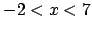
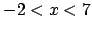

Next: 6.10 Example 10: Removal Up: 6. Examples Previous: 6.8 Example 8: Fitting Contents Index
Here, we demonstrate simple use of function splicing (see
section 3.7). In panel (a), we plot the function  , but
specify that we only want it to be drawn in the range . In panel (b),
we show how to define a discontinuous function similar to a top-hat function,
also demonstrating how to set movable boundaries between the spliced components
of functions, in this case using the variable
, but
specify that we only want it to be drawn in the range . In panel (b),
we show how to define a discontinuous function similar to a top-hat function,
also demonstrating how to set movable boundaries between the spliced components
of functions, in this case using the variable  for this purpose.
for this purpose.
Panels (c) and (d) demonstrate a more complex example, involving the splicing of a two-dimensional function.
PyXPlot Script:
examples/example9